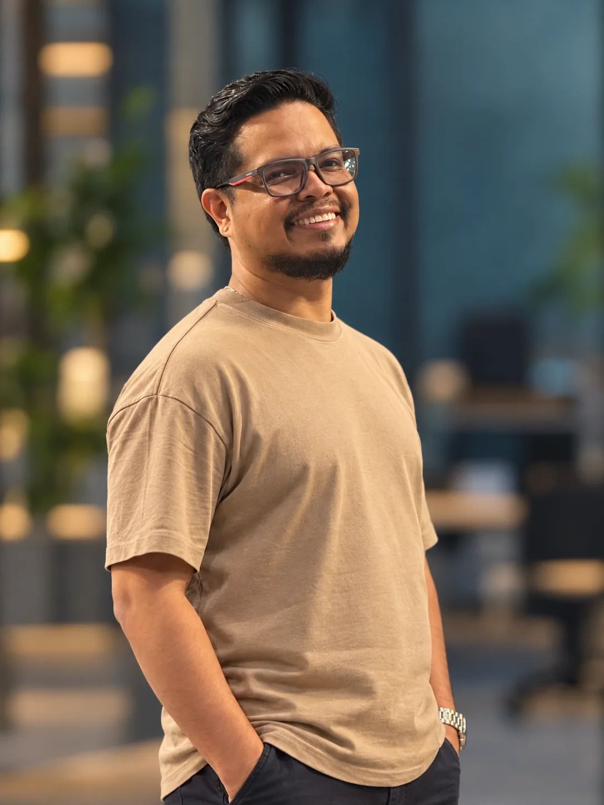

⌘
Infraestructura y continuidad
Operación y evolución de infraestructura híbrida, servidores, virtualización, respaldos y planes de continuidad y recuperación.
Conecto la ejecución técnica con los objetivos del negocio. Lidero operaciones de TI, proyectos e iniciativas de ciberseguridad para clientes y equipos en entornos internacionales.
Alcance y entregables definidos desde el inicio, adaptados al tamaño y las necesidades de cada entorno.
Operación y evolución de infraestructura híbrida, servidores, virtualización, respaldos y planes de continuidad y recuperación.
Fortalecimiento de controles, hardening, gestión de certificados y cifrado, coordinación de remediación y seguimiento de riesgos.
Implementación y administración de herramientas de seguridad, revisión de eventos y apoyo en la investigación y gestión de incidentes.
Evaluación con herramientas, priorización de hallazgos y seguimiento documentado a los planes de remediación. Las pruebas se realizan con autorización y alcance acordado.
Coordinación de equipos, clientes y proveedores; gestión de prioridades, riesgos, SLA, cronogramas, presupuestos e indicadores ejecutivos.
Mejora de procesos operativos con automatización e IA, documentación, gestión de servicios y evolución de plataformas corporativas.
Herramientas organizadas por área. La experiencia de laboratorio se identifica por separado de la experiencia profesional.
Laboratorio personal: Proxmox y prácticas de infraestructura. Se presentan como aprendizaje aplicado.
Funciones, equipos y entornos descritos en mi experiencia profesional.
Proyectos técnicos que complementan mi experiencia profesional.
Desarrollé un dashboard local que ejecuta perfiles de análisis pasivo con OWASP ZAP, aplica una lista explícita de hosts permitidos y facilita la consulta e historial de informes. Combina rastreo tradicional y de aplicaciones JavaScript; no ejecuta análisis activo ni cargas de explotación.
Práctica de administración y diagnóstico en entornos con Proxmox, pfSense, servicios Linux y componentes de monitoreo de seguridad como Wazuh.
Los laboratorios se presentan como prácticas propias y se mantienen separados de la experiencia en organizaciones.

He liderado equipos y proyectos para clientes en España, Alemania y Colombia, integrando infraestructura híbrida, gestión de riesgos, proveedores, continuidad y ciberseguridad. Mi enfoque combina ejecución técnica, comunicación clara y seguimiento ejecutivo para convertir necesidades del negocio en trabajo organizado y medible.
Entiendo el entorno, los objetivos y las restricciones.
Definimos actividades, permisos, prioridades y entregables.
Trabajo de forma controlada y comunico los avances.
Entrego hallazgos, documentación y próximos pasos.
Bello, Antioquia, Colombia · Disponible para conversaciones profesionales.